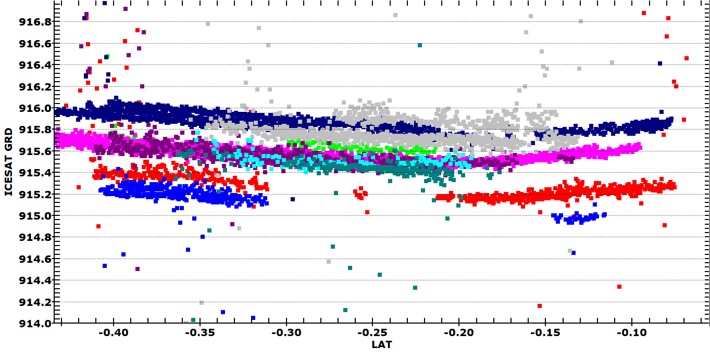
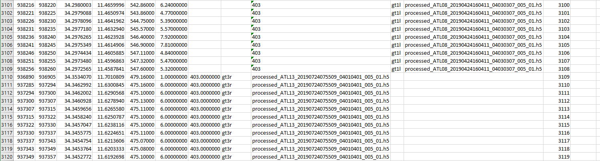

ICESat-2 elevation data
Due to very
sparse coverage (relatively dense along track, but not between tracks), these will not work well as point clouds.
- Download ICESat-2
ATL08 elevation
data
- Get data for tracks crossing the lake/reservoir, and
all the dates available.
- Convert CSV to DBF
- Insure you have a map open
- Merge nultiple CSV files from the database menu choice.
-
 Open database
to open Single file for later operations; insure you pick tghe DBF
and not the CSV file.
Open database
to open Single file for later operations; insure you pick tghe DBF
and not the CSV file.
- From the DB tool bar: Stats, ICESast-2, ICESat-2
file cleanup. This should happen automatically.
- Gets the geoid, and makes geoid heights for the ground and
canopy top
- Extracts the date from the FILE_NAME field
- Reduces the "precision" to centimeter
- Removes three unneeded fields in the database
- If you cannot get the records to show up, close and then reopen
the database
- Plot,
Color code by DB numeric field to see canopy height
or the ground level on the map
- Plot, field
quick filter to
rapidly find a single altimeter track. You can move among the track,
date, and beam. This affects both the map display, and any profiles plotted.
To track the water levels
- With satellite image as base map
- Create an NDVI or NDWI map
- With DEM as the base map. This requires that the DEM has been
editted so that the lake has a single elevation; not all DEMs have this
done.
- Adjust the colors on the map to use the full range,
so you can clearly see the flat lake
- With the grid from the base map
- Check the Edit checkbox on the databbase
- Edit, DEM/grid, Add interpolated elevation from DEM/grid. Give it a
meaningful name
- Filter the database.
- With the DEM, use the field you created, and pick
a lower and upper bound just slightly different from the elevation of
the lake in the DEM
- With the satellite NDVI or NDWI, use the field you created, and pick
a bound that differentiates the water from everything else
- Adjust the filter until you have only points in the lake
- Report, Export DBF Table which
will have just the area of the lake and use this database for further
operations
- With any basemap. This will work well if you have a big lake and
it's easy to get all you satellite tracks in a rectangle with no land.
- Zoom to the area of the lake
 Rectangular region on
Map query. You want as
large an area as possible to cover as any different tracks as possible,
to get the largest number of days
Rectangular region on
Map query. You want as
large an area as possible to cover as any different tracks as possible,
to get the largest number of days- Report:, Export DBF Table which
will have just the area of the lake
- Stats, ICESat-2, Lat profiles colors from date
- There will be a popup legend with the dates and their colors
- You can adjust the scaling on the graph by right clicking
|
 |
ICESat-2 profiles on one of the Easst African Rift lakes..
This was not filtered, and many of the points are not in the lake.
This uses the a vertical scale to highlight the returns from the
lake surface. |
Icesat File Problems

With some regularity, some of the ICESat-2 files have columns that do not
align (probably when there is no canopy anywhere on the profile). To fix
that:
- Open the DBF that fails in Excel
- Find the offending lines.
- Cut and paste them to the right so they line up
- Save as a CSV
- Import into MICRODEN
Last revised 3/22/2022